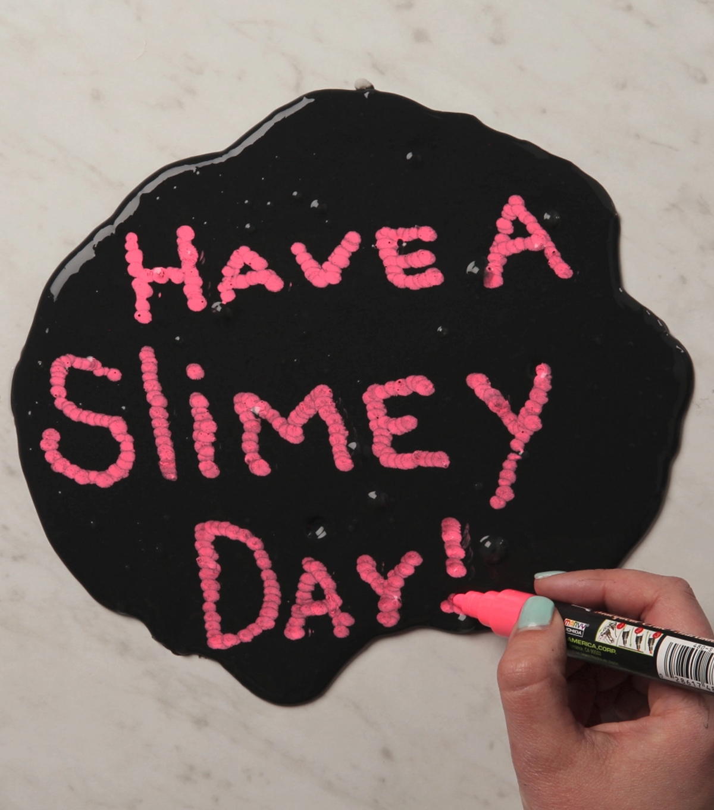
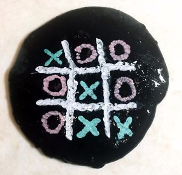

What’s even better than slime? Slime that you can use as a chalkboard, of course!

You can mark, write and make drawing in this kind of slime! And it is very creative as you know.

Don’t draw on the slime like you would on paper. The marker tip will get stuck in the slime. Mark the slime using dots instead.